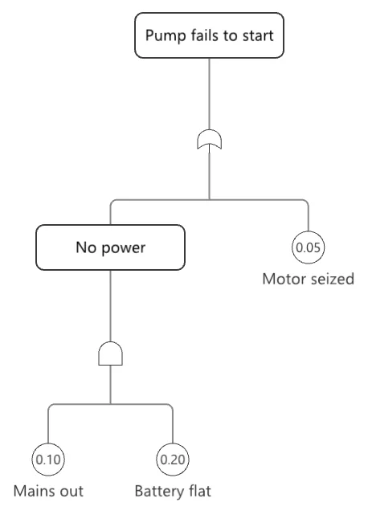

Security & governance
A governance doctrine, an LLM cannot act effectfully by construction, plus identity, a durable tamper-evident ledger and a measured response.
6 Strong · 5 Solid · 0 Partial · 1 Emerging
Measured against: OWASP · Vault · OPA · semgrep · Folders: base/security(opens in a new tab) · The guide to this area's functions

Rethought from first principles
What Softanza kept from what works, and what it rethought, as the library wrote it down in its design documents and narrations.
The Softanza wayExpression is free, admission is governed: anyone may compose and propose, but only an actor entitled to cause effects may commit.
Kept from the best practice
- The threat model is read through recognised norms: the OWASP Top 10 lists for web, language-model and agent applications, and NIST CSF 2.0, as lenses, not verdicts. source(opens in a new tab)
- Proven cryptography, not home-made: passwords are stored with Argon2id, and data at rest is sealed with authenticated encryption, so one altered byte opens nothing. source(opens in a new tab)
- Safe defaults at every boundary: TLS checks the peer unless told otherwise by name, SQL values are bound and never spliced, and arguments start a program without a shell. source(opens in a new tab)
Rethought
- Softanza assumes a manipulated prompt will get through, and makes it harmless: a language model never holds the capability to act, so a fooled model still cannot act. source(opens in a new tab)
- Four capability kinds and three trust postures decide alike who may write a file, deploy, or read a key: one mechanism, not many. source(opens in a new tab)
- A secret is a pointer to where the key lives. Its printed form is its own redaction, so no log or dump can leak the value. source(opens in a new tab)
- A guarantee is listed only with the test that proves it, and a meta-test fails if that test is missing. Gaps without a test are named as open risks. source(opens in a new tab)
Most security stacks are a bag of primitives; Softanza's is a doctrine. One capability lattice (effectful, sensing, compute, inference) and three postures gate every dangerous act uniformly, so an LLM actor holding inference only is refused a secret, a file write or a deployment by construction. On top sit a full identity stack (OIDC, SAML, WebAuthn, both sides) and an engine-computed tamper-evident audit ledger; the gaps are a unified injection-defense surface, the unbuilt plugin governance, and the absence of a formal threat-model document.
What a crafter does with it, and what stands out
- A governance doctrine enforced uniformly: an LLM actor holding only inference is refused by construction, not by a rule someone remembered to write
- An engine-computed tamper-evident audit ledger (hash-chained, seal and verify)
- A full identity stack: OIDC, SAML and WebAuthn on both sides
- Multi-hop escalation caught by graph reachability (ReachesEffectful, BlastRadius)
What is owed
- A unified injection-defense surface (the OWASP Top-10 core)
- Authenticated symmetric encryption (AES-GCM / ChaCha20-Poly1305) and a modern KDF (Argon2)
- A formal threat model mapped to guards
- Plugin / foreign-capability governance, plus a shipped Vault/KMS backend adapter
The Softanza way, run
What Softanza does differently in this area, shown by code taken from its narrations and guards, and run for this page.
The articles of this area (14)
- Guarding Secrets & Credentials 2026
- Governing a Project's Security 2026
- The Front Door 2026
- Answerable Forever 2026
- Attestation and Export 2026
- Detection over Sequences 2026
- The Drill 2026
- The Security Event 2026
- The Incident 2026
- The Security Ledger 2026
- The Governed Response 2026
- The Rest of the Seams 2026
- The Seams 2026
- The Sentinel 2026
The lanes, one by one
Lanes and their notes are quoted as they were read at the source, on Read from the source on 2026-09-16 -- base/security (25 files) and base/governance; engine crypto.zig, seclog.zig, webauthn.zig, xmldsig.zig + vendored mbedTLS; plan of record doc/design/SOFTANZA_SECURITY.md.
Two readings. The Atlas card (v21, 2026-09-30) says 6 Strong, 5 Solid, 0 Partial, 1 Emerging; the group page, read Read from the source on 2026-09-16 -- base/security (25 files) and base/governance; engine crypto.zig, seclog.zig, webauthn.zig, xmldsig.zig + vendored mbedTLS; plan of record doc/design/SOFTANZA_SECURITY.md, rates its lanes 3, 6, 2, 1. The lanes below are the group page's; the card is the more recent reading.